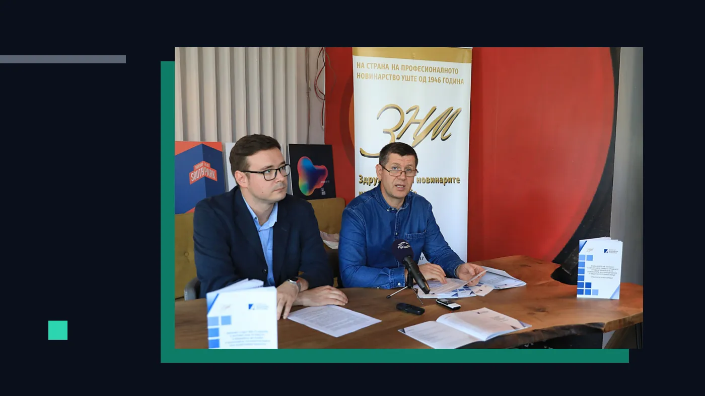

Во медиумите
Со заштита на авторските права против „копи-пејст“ новинарство
Пренесено од: Радио МОФRadio MOF (radiomof.mk)Radio MOF (radiomof.mk) ↗
Објавено и во: ЗНМAJM, Association of Journalists of Macedonia (znm.org.mk)SHGM, Shoqata e Gazetarëve të Maqedonisë (znm.org.mk) ↗, НОВА ТВNOVA TV (novatv.mk)NOVA TV (novatv.mk) ↗, A1on ↗

Верувајте дека социјалниот статус на новинарите и платите нема да се подобрат ако не знаеме како да го цениме и заштитиме нашиот труд. Не може да се жалиме дека судството не не’ заштитува, ако не го тестираме. Дајте да вршиме притисок на оние кои се неодговорни. Затоа што не може некој да се малтретира, да работи, да истражува, анализира и објавува, а некој со „копи-пејст“ содржини да претендира дека е новинар. Ако не ги соочиме со таквата ситуација, ќе продолжат така да работат. Вие ќе одите ќе истражувате, а некој од дома од пижами ќе ви го преземе вашиот труд, рече денес претседателот на Здружението на новинарите на Македонија (ЗНМ), Насер Селмани.
Селмани ова го констатираше на промоцијата на публикацијата „Влијанието на Законот за авторско право и сродните права врз работата на новинарите, фоторепортерите и медиумските работници“. Се работи за издание на ЗНМ и Фондација Конрад Аденауер, чии автори се адвокатите Иван Брешковски и Игор Марковски.
Основна причина за оваа анализа, нагласи Селмани, е фактот што во медиумската сфера во Македонија има масовно кршење на авторското право на новинарите и медиумските работници, или т.н. „копи-пејст“ новинарство.
„Веруваме дека непочитувањето на авторското право директно придонесува за лошиот социјален статус на новинарите, а од друга страна профитираат токму они што ги кршат нивните права. Очекуваме оваа публикација ќе ја крене свеста и кај институциите за големата важност за авторските права на новинарите, затоа што тоа директно влијае и на квалитетот на новинарството, како и на слободата на медиумите“, рече Селмани за публикацијата.
Тој посочи дека ЗНМ се обидува на ваквите важни прашања да им пристапи на попрофесионален начин. Сега спремаат и слична анализа за почитичкото рекламирање во медиумите.
Кај нас, нагласува Селмани, се „фрлаат“ идеи, тези, а не се аргументираат. Не се прави обид да се види како е тоа прашање решено во Европа, кои се практиките, искуствата, за да може и земјава да научи од тие практики.
„Самите фоторепортери што им пратија на некои медиуми опомени пред судски тужби, самото тоа помогна новинарите што употребуваат ‘копи-пејст’ новинарство, или крадат фотографии – почнаа да се воздржуваат. Или да прават договори со фоторепортерите да ги купуваат фотографиите, или да се договорат на подолг период на некој паушал“, нагласи Селмани.
Според претседателот на ЗНМ, македонското судство има добра пракса, ги прифаќаат жалбите и добро ги процесуираат. Сега на потег се новинарите. Ако има такви примери на крадење на текстови – да реагираат.
„Да се користи судската механизам, но и саморегулацијата. Ако Советот за етика утврдува дека некој новинар практикува плагијаторство, или краде текстови, тоа нема да биде добар имиџ за тој новинар. Ако еднаш, двапати, трипати Советот ви кажува дека крадете текстови, тогаш вашата репутација ѝво очите на јавноста ќе биде сериозно нарушена“, рече Селмани.
Еден од авторите на публикацијата, адвокатот Иван Брешковски, нагласи дека даваат краток историски осврт на развитокот на авторските права, односно еволуцијата на прописите во таа област во Европа и светот. Според Брешковски, во неа се појаснети оние делови од македонскиот Закон за авторското право и сродните права (ЗАПСП) кои се важни за работата на новинарите и медиумските работници.
„Унапредувањето на заштитата на авторските права е значајно кога станува збор за почитување на новинарските производи преку гарантирање на сопственоста на новинарските текстови, фотографии, аудио визуелни содржини, колумни, интервјуа, карикатури и други производи кои се пуштаат во етерот и, каде, се гарантираат Материјалните права, односно имотните интереси на авторот во овој случај новинарот, кои произлегуваат од авторско дело. Ова е многу важно“, рече Брешковски.
Во оваа компаративна анализа се прави споредба со Хрватска, чиј закон е во согласност со европските практики. Брешковски бара земјава да го следи хрватскиот пример.
„Вие како новинар, создавате авторско дело, независно дали е тоа истражувачка сторија. Е, сега, според македонскиот закон – материјалните, имотните права кои произлегуваат од тоа авторско дело, припаѓа по автоматизам на работодавецот. Во Хрватска не е така. Прилагодено е евроското законодавство. Таму припаѓаат на авторот, освен ако во договорот за вработување не е одреден на друг начин. Значи е на повисоко ниво. Затоа Законот треба да се менува. Во анализата се обработува колективното управување со авторското право и сродните права. Toa e слично нешто како ЗАМП, кое колективно управува со авторски права на музичари, кантавтори и дејци. Односно, како колективно да се управува со авторските права на новинарите“, вели Брешковски.
И тој потврдува дека авторските права се малку поизразени во судската пракса отколку случаите со клевети и навреди. Затоа ги поттикнува новинарите да покренуваат постапки за да се заштититуваат.
„Со тоа ги штитите вашите имотни права, имотни интереси, кои произлегуваат од вашите дела. Од малата пракса, судовите веќе имаат пракса и кон онлајн медиумите. Така се создава заштитен механизам кон самите прекршители. За да се замислат дали тоа да го сторат, да крадат новинарски производи“, нагласи адвокатот Брешковски.
Бојан Шашевски
Текстот е целосно преземен од: radiomof.mk. ЛИНК ↗